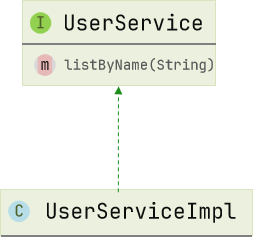

MyBatisPlus
1. MP 配置
1.1 Mapper
| Java |
|---|
| public interface xxxMapper extends BaseMapper<T> {} // 解析泛型
|
MyBatisPlus 通过扫描实体类，并基于反射获取实体类信息作为数据库表信息，默认情况
- 类名驼峰转下划线作为表名
- 名为 id 的字段作为主键
- 变量名驼峰转下划线作为表的字段名
1.2 常用注解
1.2.1 @TableName 指定表名
1.2.2 @TableId 指定主键字段
IdType 常见类型：AUTO、INPUT、ASSIGN_ID
1.2.3 @TableField 指定普通字段
常见使用场景：
- 成员变量名与数据库字段名不一致
- 成员变量名以 is 开头，且是布尔值（默认转换会把 is 去掉，而非驼峰转下划线）
- 成员变量名与数据库关键字冲突
- 成员变量名不是数据库字段，设置
exist = false
1.3 常见配置
| YAML |
|---|
| mybatis-plus:
type-aliases-package: com.demo.po # 别名扫描包
mapper-locations: "classpath*:/mapper/**/*.xml" # Mapper.xml 文件地址，默认值
configuration:
map-underscore-to-camel-case: true # 是否开启下划线和驼峰映射
cache-enabled: false # 是否开启二级缓存
global-config:
db-config:
id-type: assign_id # id 为雪花算法生成
update-strategy: not_null # 更新策略: 只更新非空字段
|
2. 核心功能
2.1 条件构造器
常见用法：
2.2 自定义 SQL
常见流程：
- 基于
Wrapper 构建 where 条件
mapper 方法参数中用 Param 注解声明 wrapper 变量名称，必须是 ew- 自定义
SQL，并使用 Wrapper 条件
2.3 Service

- 自定义
Service 接口继承 IService 接口

- 自定义
Service 实现类，实现自定义接口并继承 ServiceImpl 类
3. 拓展功能
3.1 代码生成器
使用 MyBatis-Plus 代码生成器或者插件，快速生成 Entity、Mapper、Mapper XML、Service、Controller 等各个模块的代码。
3.2 Db Kit 静态工具
Db Kit 是 Mybatis-Plus 提供的一个工具类，它允许开发者通过静态调用的方式执行 CRUD 操作，从而避免了在 Spring 环境下可能出现的 Service 循环注入问题，简化了代码，提升了开发效率。
3.3 逻辑删除
3.4 枚举处理器
3.4.1 @EnumValue
指定枚举值在数据库中存储的实际值，支持枚举类中的任意字段。
[注] 未声明的枚举将使用 mybatis 的 defaultEnumTypeHandler 的默认值 EnumTypeHandler 进行映射
可以通过修改全局配置来变更。
3.4.2 @JsonValue
指定序列化枚举值为前端返回值。
3.5 字段类型处理器
在 MyBatis 中，类型处理器扮演着 JavaType 与 JdbcType 之间转换的桥梁角色。
3.5.1 JSON 处理器
MyBatis-Plus 内置了多种 JSON 类型处理器，包括 AbstractJsonTypeHandler 及其子类 Fastjson2TypeHandler、FastjsonTypeHandler、GsonTypeHandler、JacksonTypeHandler 等。这些处理器可以将 JSON 字符串与 Java 对象相互转换。
3.5.2 自定义类型处理器
3.6 分页插件
MyBatis-Plus 的分页插件 PaginationInnerInterceptor 提供了强大的分页功能，支持多种数据库，使得分页查询变得简单高效。
3.6.1 PageQuery 封装
| Java |
|---|
| @Data
@NoArgsConstructor
@AllArgsConstructor
public class PageQuery {
private Integer pageNo;
private Integer pageSize;
private String sortBy;
private Boolean isAsc;
public <T> Page<T> toMpPage(OrderItem ... orders){
Page<T> p = Page.of(pageNo, pageSize);
if (sortBy != null) {
p.addOrder(new OrderItem(sortBy, isAsc));
return p;
}
if(orders != null){
p.addOrder(orders);
}
return p;
}
public <T> Page<T> toMpPage(String defaultSortBy, boolean isAsc){
return this.toMpPage(new OrderItem(defaultSortBy, isAsc));
}
public <T> Page<T> toMpPageDefaultSortByCreateTimeDesc() {
return toMpPage("create_time", false);
}
public <T> Page<T> toMpPageDefaultSortByUpdateTimeDesc() {
return toMpPage("update_time", false);
}
}
|
3.6.2 PageDTO 封装
| Java |
|---|
| @Data
@NoArgsConstructor
@AllArgsConstructor
public class PageDTO<V> {
private Long total;
private Long pages;
private List<V> list;
public static <V, P> PageDTO<V> empty(Page<P> p){
return new PageDTO<>(p.getTotal(), p.getPages(), Collections.emptyList());
}
public static <V, P> PageDTO<V> of(Page<P> p, Class<V> voClass) {
List<P> records = p.getRecords();
if (records == null || records.size() <= 0) {
return empty(p);
}
List<V> vos = BeanUtil.copyToList(records, voClass);
return new PageDTO<>(p.getTotal(), p.getPages(), vos);
}
public static <V, P> PageDTO<V> of(Page<P> p, Function<P, V> convertor) {
List<P> records = p.getRecords();
if (records == null || records.size() <= 0) {
return empty(p);
}
// 自定义数据转换
List<V> vos = records.stream().map(convertor).collect(Collectors.toList());
return new PageDTO<>(p.getTotal(), p.getPages(), vos);
}
}
|